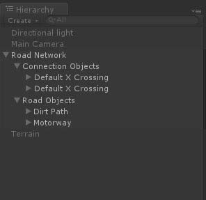
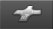
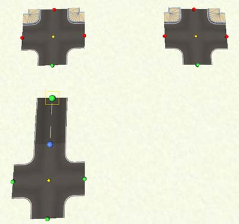
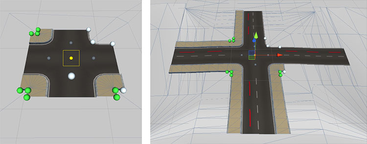

|
EasyRoads3D V3 Beta Manual |
Intersections [Pro] One of the new features in EasyRoads3D v3 is support for intersections. EasyRoads3D includes two types of intersections: dynamic intersections and custom intersections. Dynamic intersections are scripted and can be customized to your requirements, width, sidewalks, materials, etc. Custom intersections are intersections based on your own meshes and allows you to add any type of intersection or road connection that is currently not supported yet. You can attach roads to these prefabs just like with dynamic prefabs.
In v3 all intersections are child objects of "Connection Objects" which is a child of the main Road Network game object. 
CREATING AN INTERSECTION IN THE SCENE There are two ways to create an intersection in the scene: 1. Select the first or last marker of a road. In the Inspector you will see a list of available crossing connections. Simply click the connection you want to attach. The crossing will automatically connect to the selected marker. Currently when the road is not yet connected to a crossing on the other side of the road, the road will automatically inherit and match the newly attached crossing connection. This may change, instead, only crossings that match the road type will be selectable in the Inspector. 2. Select the third crossings tab  in the Inspector. You will see a list of available crossing types. Select the type you want to put directly in the scene, it will be highlighted. SHIFT + click in the scene at the position where you want to place this crossing. The crossing will automatically be instantiated at the mouse position.
STARTING NEW ROADS FROM AN INTERSECTION CONNECTION Move the scene camera towards an intersection instance. You will see green handles at each available connection. Move the mouse to one of the handles, the yellow rectangle move handle will appear. Click and drag to attach and start a new road from this connection. The road will automatically inherit the selected road settings of the specific crossing connection including possibly activated side objects of the associated road type.
CONNECTING EXISTING ROADS TO AN INTERSECTION The first and last marker of a non closed road can be connected to a crossing connection. Road that are not connected to a crossing yet will automatically inherit the connection road type after connecting it. When the road is already connected to a crossing on the other side, all crossing connections that do not match the selected road geometry will be displayed with red handles. It will not be possible to connect the road to these connections. Roads can only be attached to connections with green handles.  To avoid connections displaying in red for custom crossings with slightly different connection vertex positions, this currently checks on the vertices count of the geometry structure only!
To the change the position of a crossing, select the prefab by clicking the center yellow handle. Hit the M (move handle) or W (position gizmo) key to show the preferred position handle / gizmo. You can now move the crossing. Attached roads will adapt to the updated position.
When you attach a new crossing to a road, the crossing will be aligned in the corresponding direction. This connection will automatically inherit alignment priority. Whenever you change the shape of the connected road, the crossing will be aligned accordingly. The connection with alignment priority is highlighted with a white handle in front of it. When you select the crossing prefab (click the center yellow sphere handle), you will see additional grey alignment handles for each connection (see the image below) in the center of the road at the start of the connection. You can use to this to change the connection with alignment priority or you can click the white active handle to disable auto alignment for this crossing. 
Dynamic crossing prefabs fully supports sidewalks. You can create crossing prefabs with sidewalks by default disabled or enabled. In any case, inside the scene sidewalks on dynamic crossings can be customized per crossing connection. When you select a crossing prefab (click the center yellow handle) you will see 3 green sphere handles inside each crossing corner (see above image). When sidwewalks are inactive for that corner all 3 handles will be white. See the same image above. The middle handle controls the visibility of the sidewalk segment on that crossing corner. The outer two handles control the active status of sidewalks on connected roads. When starting a new road, the road will automatically inherit the sidewalk settings of the associated crossing connection. When attaching a new crossing prefab to a road while the road is already connected to a crossing on the other side, the associated connection corners of the new crossing will inherit the current sidewalk settings of the road. When you change crossing corner handles while a road is attached, the road sidewalk status will update. Possibly connected crossings on the other side of the road will update as well.
Alternatively you can manually rotate the crossing prefab. Select the prefab by clicking the center yellow handle. Hit the E key to show the rotation gizmo. You can now rotate the crossing. Attached roads will adapt to the updated rotation. For roundabouts you can select relative to which connection you want to rotate the roundabout. As soon as the rotation gizmo is selected you will see grey handles in the center of each connection. The white handle represents the currently selected connection relative to which the roundabout will be rotated. If no connection is selected the roundabout will be rotated on its global orientation. [screenshot] Before you start with a new project it is recommended to think about the scenes you want to make and which type of crossings you want to use. By creating project / scene specific crossing prefabs you will be able to reuse them which will greatly improve the workflow and productivity. Click here for full information about creating crossing prefabs.
You can remove an intersection by clicking the yellow handle in the center of the intersection. This will select the connection, click "Delete Connection" in the Inspector to remove it. When a marker is selected with a connection attached you will also see a button "Delete Connected Object". This will also remove the connection.
|
|